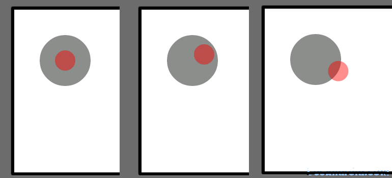

【Android游戏开发二十四】360°平滑游戏摇杆
此章节为正在创作的游戏开发书籍中的一部分，由于写书的缘故很久没有更新了，挺对不起大家的；那么今天放出书中的一部分，让大家先睹为快吧；
在Android系统的手机，有的根本没有实体的上下左右导航按键，所以很多游戏都会有利用Android手机都具有触屏的特性，制作360度摇杆来取代游戏方向键，这样不仅能使界面UI变得很美观，而且更加的方便操作；
下面先来看效果吧：

下面开始实现：
首先，肯定是绘制两个圆形，无可置疑；圆心点重合，为了区分 ，所以设置了不同颜色；
灰色：固定不动的摇杆背景（也意味着摇杆的活动范围）；
红色：摇杆； 然后考虑：红色摇杆肯定跟随手指触屏的位置而移动，那么这个很easy啦，只要在触屏事件中处理，将获取的触屏XY坐标赋值与摇杆XY坐标即可；这个没问题；但是紧接着在思考一个问题:
一般情况下，我们不可能希望摇杆一直跟随手指位置，所以需要一个摇杆的活动区域，也就如同上图中的灰色区域，在灰色区域内摇杆可以随着用户的触屏位置移动，但是一旦用户触屏位置在活动区域之外，摇杆就不应该跑出灰色区域；所以具体实现步骤如下：
1）得到通过摇杆的坐标与触屏点的坐标得到所形成的角度Angle。
2）根据Angle，以及已知所在圆的半径，算出摇杆所在灰色圆形上做圆周运动的当前X,Y坐标;
首先第一步: 算出摇杆坐标与触屏坐标形成的角度
我们肯定已知摇杆当前坐标，并且当用户触屏时的坐标也可以在触屏按键中得到，那么获取的方法就可以写成一个方法，方法如下：
/***
* 得到两点之间的弧度
*/
public double getRad(float px1, float py1, float px2, float py2) {
// 得到两点X的距离
float x = px2 - px1;
// 得到两点Y的距离
float y = py1 - py2;
// 算出斜边长
float xie = (float) Math.sqrt(Math.pow(x, 2) + Math.pow(y, 2));
// 得到这个角度的余弦值（通过三角函数中的定理 ：邻边/斜边=角度余弦值）
float cosAngle = x / xie;
// 通过反余弦定理获取到其角度的弧度
float rad = (float) Math.acos(cosAngle);
// 注意：当触屏的位置Y坐标<摇杆的Y坐标我们要取反值-0~-180
if (py2 < py1) {
rad = -rad;
}
return rad;
}
在Java中 Math类中的反余弦函数返回的不是角度是弧度，这一点要格外注意；
另外一点就是，因为三角函数角度范围是0~180度,所以反之应该是-0~-180度； 通过此函数获取到摇杆与用户触屏位置所形成的角度之后，我们就可以通过圆周公式来得到其摇杆的XY坐标了；方法如下：
/*** @param R
* 圆周运动的旋转点
* @param centerX
* 旋转点X
* @param centerY
* 旋转点Y
* @param rad
* 旋转的弧度
*/
public void getXY(float centerX, float centerY, float R, double rad) {
// 获取圆周运动的X坐标
SmallRockerCircleX = (float) (R * Math.cos(rad)) + centerX;
// 获取圆周运动的Y坐标
SmallRockerCircleY = (float) (R * Math.sin(rad)) + centerY;
}
圆周运动公式：通过三角函数定理得出：
X坐标：所在圆的半径*角度的余弦值
Y坐标：所在圆形半径*角度的正弦值
圆周的大小，由所在圆的半径R的大小来决定；通过以上的公式我们就可以让摇杆在灰色圆形上做圆周运动，当然除此之外我们还要注意三点：
1：做圆周运动的大小，应该跟灰色区域的半径相同；
2：触屏事件中应该首先判定用户触屏的位置是否在灰色区域中，如果不在，我们就应该获取摇杆与触屏点的角度然后获取摇杆应该在圆周运动上的XY坐标；如果在，就没有处理了，只要将摇杆位置随着用户点击位置就好了；
3：在触屏事件中，当用户手指离开屏幕后，应该让摇杆的位置恢复到初始的位置状态；下面是整个项目的MySurfaceView中全部代码：
import android.content.Context;
import android.graphics.Canvas;
import android.graphics.Color;
import android.graphics.Paint;
import android.util.Log;
import android.view.MotionEvent;
import android.view.SurfaceHolder;
import android.view.SurfaceView;
import android.view.SurfaceHolder.Callback;
public class MySurfaceView extends SurfaceView implements Callback, Runnable {
private Thread th;
private SurfaceHolder sfh;
private Canvas canvas;
private Paint paint;
private boolean flag;
// 固定摇杆背景圆形的X,Y坐标以及半径
private int RockerCircleX = 100;
private int RockerCircleY = 100;
private int RockerCircleR = 50;
// 摇杆的X,Y坐标以及摇杆的半径
private float SmallRockerCircleX = 100;
private float SmallRockerCircleY = 100;
private float SmallRockerCircleR = 20;
public MySurfaceView(Context context) {
super(context);
Log.v("android", "MySurfaceView");
this.setKeepScreenOn(true);
sfh = this.getHolder();
sfh.addCallback(this);
paint = new Paint();
paint.setAntiAlias(true);
setFocusable(true);
setFocusableInTouchMode(true);
}
public void surfaceCreated(SurfaceHolder holder) {
th = new Thread(this);
flag = true;
th.start();
}
/***
* 得到两点之间的弧度
*/
public double getRad(float px1, float py1, float px2, float py2) {
// 得到两点X的距离
float x = px2 - px1;
// 得到两点Y的距离
float y = py1 - py2;
// 算出斜边长
float xie = (float) Math.sqrt(Math.pow(x, 2) + Math.pow(y, 2));
// 得到这个角度的余弦值（通过三角函数中的定理 ：邻边/斜边=角度余弦值）
float cosAngle = x / xie;
// 通过反余弦定理获取到其角度的弧度
float rad = (float) Math.acos(cosAngle);
// 注意：当触屏的位置Y坐标<摇杆的Y坐标我们要取反值-0~-180
if (py2 < py1) {
rad = -rad;
}
return rad;
}
@Override
public boolean onTouchEvent(MotionEvent event) {
if (event.getAction() == MotionEvent.ACTION_DOWN
|| event.getAction() == MotionEvent.ACTION_MOVE) {
// 当触屏区域不在活动范围内
if (Math.sqrt(Math.pow((RockerCircleX - (int) event.getX()), 2)
+ Math.pow((RockerCircleY - (int) event.getY()), 2)) >= RockerCircleR) {
// 得到摇杆与触屏点所形成的角度
double tempRad = getRad(RockerCircleX, RockerCircleY,
event.getX(), event.getY());
// 保证内部小圆运动的长度限制
getXY(RockerCircleX, RockerCircleY, RockerCircleR, tempRad);
} else {// 如果小球中心点小于活动区域则随着用户触屏点移动即可
SmallRockerCircleX = (int) event.getX();
SmallRockerCircleY = (int) event.getY();
}
} else if (event.getAction() == MotionEvent.ACTION_UP) {
// 当释放按键时摇杆要恢复摇杆的位置为初始位置
SmallRockerCircleX = 100;
SmallRockerCircleY = 100;
}
return true;
}
/**
* @param R
* 圆周运动的旋转点
* @param centerX
* 旋转点X
* @param centerY
* 旋转点Y
* @param rad
* 旋转的弧度
*/
public void getXY(float centerX, float centerY, float R, double rad) {
// 获取圆周运动的X坐标
SmallRockerCircleX = (float) (R * Math.cos(rad)) + centerX;
// 获取圆周运动的Y坐标
SmallRockerCircleY = (float) (R * Math.sin(rad)) + centerY;
}
public void draw() {
try {
canvas = sfh.lockCanvas();
canvas.drawColor(Color.WHITE);
// 设置透明度
paint.setColor(0x70000000);
// 绘制摇杆背景
canvas.drawCircle(RockerCircleX, RockerCircleY, RockerCircleR,
paint);
paint.setColor(0x70ff0000);
// 绘制摇杆
canvas.drawCircle(SmallRockerCircleX, SmallRockerCircleY,
SmallRockerCircleR, paint);
} catch (Exception e) {
} finally {
try {
if (canvas != null)
sfh.unlockCanvasAndPost(canvas);
} catch (Exception e2) {
}
}
}
public void run() {
while (flag) {
draw();
try {
Thread.sleep(50);
} catch (Exception ex) {
}
}
}
public void surfaceChanged(SurfaceHolder holder, int format, int width,
int height) {
Log.v("android", "surfaceChanged");
}
public void surfaceDestroyed(SurfaceHolder holder) {
flag = false;
Log.v("android", "surfaceDestroyed");
}
}